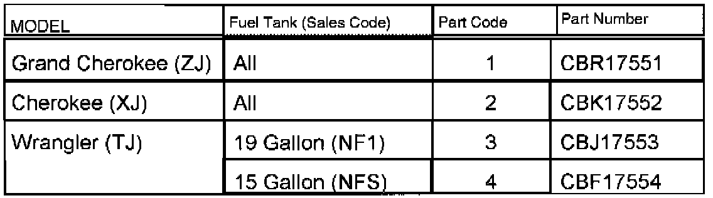

Recall - Fuel Tank Sending Unit: Overview
No. 755June, 1998
To: All Jeep(R) & Eagle Dealers
Subject:
Safety Recall # 755 -- Fuel Tank Sending Unit
Models:
^ 1997 Model Year Jeep Grand Cherokee (ZJ) Vehicles Built Through June 1, 1997 (MDH 060108)
^ 1997 Model Year Jeep Cherokee (XJ) Vehicles Built Through May 9, 1997 (MDH 050919)
^ 1997 Model Year Jeep Wrangler (TJ) Vehicles Equipped With a:
^ 19 Gallon Fuel Tank (Sales Code -- NF1) Built Through May 9, 1997 (MDH 050907)
^ 15 Gallon Fuel Tank (Sales Code -- NFS) Built Through May 13, 1997 (MDH 051323)
The fuel tank level sending unit on about 400,000 of the above listed vehicles, may cause the fuel gauge to display an inaccurate fuel level. As a result, the vehicle may run out of fuel when the fuel gauge still indicates that there is fuel remaining in the tank. To correct this condition, the fuel tank level sending unit must be replaced.
IMPORTANT:
Some of the involved vehicles may be in dealer new vehicle inventory. Federal law requires you to complete this recall service on these vehicles before retail delivery. Dealers should also consider this requirement to apply to used vehicle inventory and should perform this recall on vehicles in for service as determined by using DIAL System Function VIP.
Dealer Notification & Vehicle List
All dealers will receive a copy of this dealer recall notification letter by first class mail. Each dealer to whom involved vehicles were invoiced (or the current dealer at the same street address) will receive a list of their involved vehicles. The Vehicle List is arranged in Vehicle Identification Number (VIN) sequence. Owners known to Chrysler are also listed. The lists are for dealer reference in arranging for service of involved vehicles.
DIAL System Functions 53 and VIP
All involved vehicles will be entered to DIAL System Functions 53 and VIP at the time of recall implementation for dealer inquiry as needed.
Function 53 provides involved dealers with an updated VIN list of incomplete vehicles. The customer name, address and phone number is listed if known. Parts information is also provided. Completed vehicles are removed from Function 53 within several days of repair claim submission. To use this system, type "53" at the ENTER FUNCTION" prompt, then type "ORD755".
Parts Information
IMPORTANT:
A quantity of parts will be distributed initially and billed to all involved dealers. This quantity will cover a portion of the total vehicles involved. Additional parts may be ordered as needed to support customer demand.
Each involved dealer, to whom vehicles in the recall were invoiced (or the current dealer at the same street address), will receive enough Fuel Tank Sending Unit packages, to service about 25% of their phase 1 vehicles.
Dealers should determine which parts package is required for each vehicle at the time appointments are scheduled to assure that the correct parts package is available when the customer arrives. The appropriate fuel tank sending unit package for the vehicle to be serviced may be determined by:

^ Using the part code in the third column of the VIN list along with the table (involved dealers):
^ Using the VIN and part number list electronically transmitted to DIAL System Function 53 (involved dealers) or
^ Entering the VIN to the DIAL VIP System (sales code information) along with the table (all dealers).
Each parts package contains the following components:
Quantity Description
1 Fuel Tank Sending Unit
1 Seal Fuel Tank Module
2 J-Bolt, Fuel Tank Strap (XJ only)
2 Nut Fuel Tank Strap (XJ only)
4 Push Clips Splash Shield (TJ only)
1 Tie Strap (TJ only)
Owner Notification and Service Scheduling
All involved vehicle owners known to Chrysler are being notified of the service requirement by first class mail. They are requested to schedule appointments for this service with their dealers. A copy of the owner notification letter is included.
Enclosed with each owner notification is an Owner Notification Form. The involved vehicle and recall are identified on the form for owner or dealer reference as needed.
Completion Reporting and Reimbursement
Claims for vehicles which have been serviced must be submitted on the DIAL System. Claims submitted will be used by Chrysler to record recall service completions and provide dealer payments.
Use one of the following labor operation numbers and time allowances:
Replace fuel tank sending unit:
^ Grand Cherokee (ZJ) and Cherokee (XJ) vehicles:
^ Without a Skid Plate
^ With a Skid Plate
^ Wrangler (TJ) vehicles
Labor Operation Number Time Allowance
14755182 0.8 hours
14755183 1.1 hours
14755184 1.3 hours
Add the cost of the recall parts package plus applicable dealer allowance to your claim.
Note:
See the Warranty Administration Manual, Recall Claim Processing Section for complete recall claim processing instructions.
Parts Return
Not required.
Vehicle Not Available
If a vehicle is not available for service for a known reason, let us know by filling out the pre-addressed Vehicle Disposition Form portion of the Owner Notification Form or describe the reason on a postcard and mail to:
Chrysler Corporation
CIMS 482-00-85
800 Chrysler Drive East
Auburn Hills, Michigan 48326-2757
Following the above procedures will expedite the processing of your claim.
If you have any questions or need assistance in completing this action, please contact your Zone Service Office.